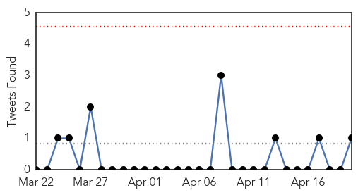

30 Day Trends
Web: 0 alerts, 0 warnings
Twitter: 0 alerts, 0 warnings
Top Articles:
- 0.956
- Dog Flu Outbreak: What You Need to Know
- 0.953
- Strange ailment not contagious, says govt
- 0.944
- Ondo Government says strange disease not contagious, confirms 18 deaths
- 0.925
- Unidentified disease outbreak not infectious - Minister of Health assures Nigerians - Nigeria
- 0.917
- Chicago Tribune
- 0.917
- Chicago Tribune
- 0.917
- Chicago Tribune
- 0.917
- Chicago Tribune
- 0.917
- Chicago Tribune
- 0.917
- Chicago Tribune
- 0.917
- Chicago Tribune
- 0.917
- Chicago Tribune
- 0.917
- Chicago Tribune
- 0.917
- Chicago Tribune
- 0.917
- Chicago Tribune
- 0.917
- Chicago Tribune
- 0.917
- Chicago Tribune
- 0.917
- Chicago Tribune
- 0.917
- Chicago Tribune
- 0.917
- Chicago Tribune
- 0.917
- Chicago Tribune
- 0.917
- Chicago Tribune
- 0.917
- Chicago Tribune
- 0.917
- Chicago Tribune
- 0.917
- Chicago Tribune
- 0.917
- Chicago Tribune
- 0.917
- Chicago Tribune
- 0.917
- Chicago Tribune
- 0.906
- Antigua Observer Newspaper
- 0.887
- Over 60? Take steps to try to avoid getting shingles
- 0.840
- Superbug outbreak: piggery workers affected, cause unknown
- 0.837
- Bird Flu Spreads to a Farm in Iowa With 5.3 Million Chickens
- 0.832
- HIV Outbreak In Indiana Prompts Gov. Pence To Issue Public Health Emergency To Stall The Epidemic
- 0.806
- Verklaring van de hoge vertegenwoordiger namens de Europese Unie over de situatie in het Palestijnse vluchtelingenkamp van Yarmouk in Syrië
- 0.787
- Household pets can transmit infections to people
- 0.778
- Dog flu reaching epidemic status in parts of the Midwest
- 0.758
- 'Local gin' suspected of causing 20 deaths in Ondo
- 0.750
- STDs are on the rise — are you part of the problem?
- 0.738
- Household pets can transmit infections to people, especially those with weak immune systems
- 0.726
- What you need to know about dog flu
- 0.722
- Iraq: Iraq: Mobile Medical Clinics response in Dahuk Governorate - March, 2015
- 0.695
- Strange Disease In Irele Not Contagious – Ondo Govt
- 0.656
- Govt investigating Ondo mysterious deaths –Minister
- 0.640
- Preventable Rabies Kills 59000 People Every Year Worldwide, Says Report
- 0.617
- Howell County has first confirmed rabies case of 2015 –
- 0.615
- Doctors reach Jajarkot with medicines
- 0.606
- New Mexico Department of Health warns of possible Botulism in Le
- 0.605
- 9 tips to stop pets from spreading infections to humans
- 0.590
- Doctors' error shows poor state of Argentina's health-care system
- 0.580
- Number of Times Getting Sick This Cold and Flu Season
Showing top 50 articles...
Top Tweets:
- 0.628
- KSA reports 2 new MERS cases. Only 8 so far for April. Are hospitals better at spotting cases, containing spread? http://t.co/7MMq4bi8ML
- 0.582
- RT: A new & improved flu vaccine is available in Australia, after a severe flu season in the northern hemisphere. 9News http://…
- 0.531
- RT: Unidentified disease outbreak in Nigeria not infectious & no new cases have been reported in the past 100 hours http://t.co/h…
Web/News Articles

Tweets
Article Locations

Article Confidences